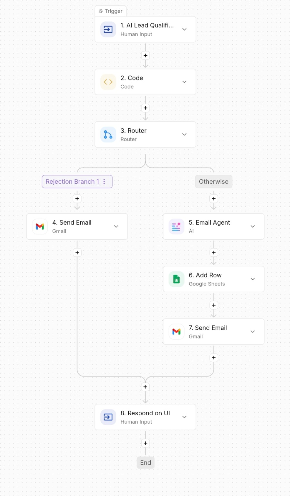
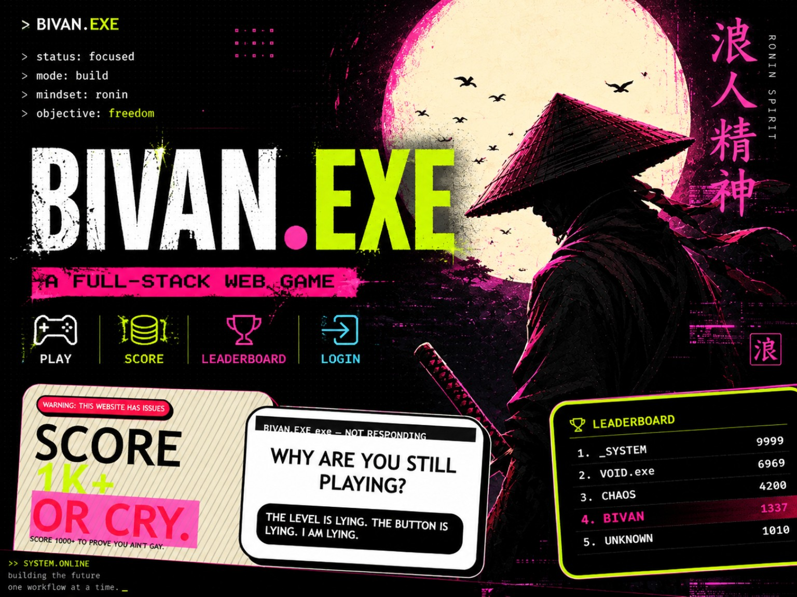
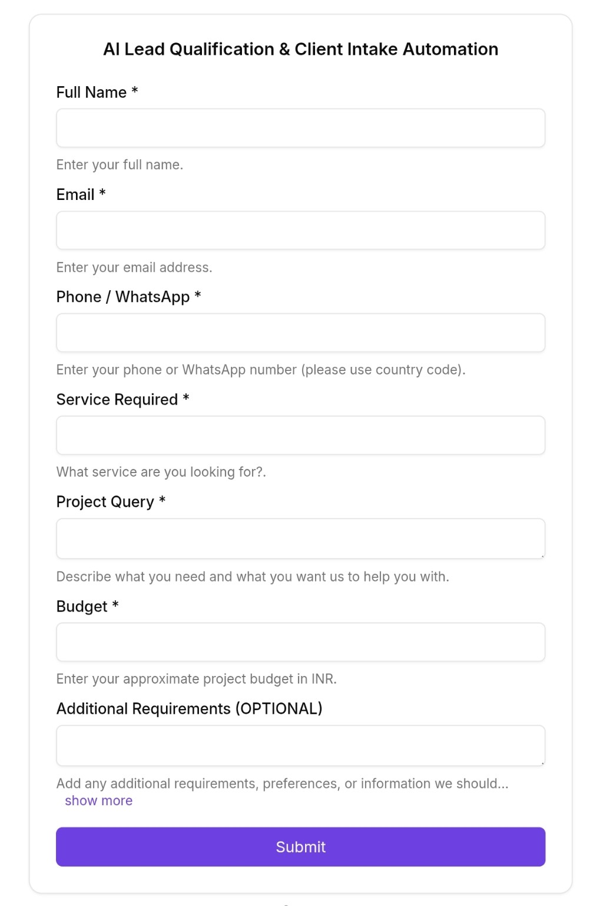

✦
AI Automation & Agents
AI-powered workflows that classify, summarize, route, draft or assist with repetitive business work.
Build a workflow →PRACTICAL AI. REAL BUSINESS WORK.
BRONAXIS builds practical AI automations, websites, web apps and connected digital systems that remove repetitive work, organize business data and help teams respond faster. You bring the problem. We design the system around it.
WHAT I BUILD
I don't sell “AI” for the sake of AI. I look at the repetitive part of a business process, then build the smallest useful system around it.
AI-powered workflows that classify, summarize, route, draft or assist with repetitive business work.
Build a workflow →Capture enquiries, qualify leads, store structured data and trigger the right follow-up.
Improve lead handling →Connect forms, messages and business rules so customers get faster responses and staff get the right alerts.
Automate communication →Modern, responsive websites and custom web systems built around an actual business requirement.
Build a digital system →Move information between forms, sheets, databases and third-party services without manual copy-paste.
Connect your tools →Practical testing, validation and basic security checks to make digital systems more reliable.
Test a system →THE REAL PROBLEM
Most workflows break at the handoffs: someone copies a lead into a sheet, sends the same reply again, checks a status manually, then remembers to follow up later.
Forms, WhatsApp, email and spreadsheets don't have to stay disconnected. Data can move automatically between the tools you already use.
Enquiry comes in → nobody follows up → the opportunity disappears. A workflow can capture, qualify, notify and schedule the next action.
FAQs, service information and basic process questions can be handled instantly when the information is structured correctly.
Approvals, reminders, reports, notifications and status updates can be triggered by clear business rules instead of memory.
A WORKFLOW IN MOTION
This is the basic idea behind an automation: an event starts the flow, logic decides what happens, data is updated and the right person or customer gets the next action.
SELECTED WORK
These are the kinds of systems I use to demonstrate my development and automation capabilities.

AI-POWERED BUSINESS WORKFLOW
A multi-step workflow that collects client requirements, validates the information, applies qualification logic, uses AI to summarize/classify the lead, stores structured data and supports approval-based follow-up.

FULL-STACK DEVELOPMENT
A completed browser game combining an interactive HTML/CSS/JavaScript frontend with a Node.js + Express REST API and Supabase-backed persistent scores and leaderboard data.
Open live project ↗
AUTOMATION INTAKE
A form-driven intake layer designed to collect contact details, service requirements, project context and budget before the automation processes the request.
Start a similar workflow →HOW IT WORKS
The process starts with the bottleneck, not the tool. The final system depends on your existing software, rules, data and goals.
Tell me where your team loses time: enquiries, data entry, follow-ups, reporting, communication or another repetitive process.
I map the process and select only the automation pieces that create a practical benefit.
The workflow is connected to the tools you already use where possible, with AI added where it is actually useful.
We test the workflow, edge cases and handoffs, then refine it around real usage.
WHERE IT FITS
Automation isn't limited to tech companies. The best opportunity is usually a repetitive process that happens often enough to matter.
Enquiry capture, lead qualification, follow-ups, fee reminders, attendance, results and parent communication.
Example → enquiry → qualify → counsellorOrder updates, customer support, stock alerts, lead capture, returns and internal notifications.
Example → order → update → notifyClient intake, document collection, appointment booking, project updates and follow-up workflows.
Example → enquiry → intake → meetingBooking requests, reminders, lead capture, repeat-visit communication and customer feedback workflows.
Example → lead → slot → reminderProperty enquiries, lead routing, visit scheduling, status tracking and follow-up.
Example → lead → qualify → visitIf your workflow doesn't fit a category, we can map the process first and build around the actual requirement.
Example → process → system → resultAUTOMATION CATALOGUE
These are capability areas, not a promise that every business needs all of them. We combine only the pieces that solve the actual bottleneck.
ABOUT THE BUILDER
I build practical digital systems around real business processes: AI workflow automation, AI agents, lead/CRM automation, email and WhatsApp workflows, data and API integrations, websites, web applications, testing and custom digital solutions.
Based in Hojai, Assam — serving clients worldwide.
READY WHEN YOU ARE
We'll figure out whether it should be automated, redesigned, connected to another tool — or left alone.
START A PROJECT
Tell me what you currently do manually. You don't need to know which AI tool, API or automation platform you need. I'll look at the process first.